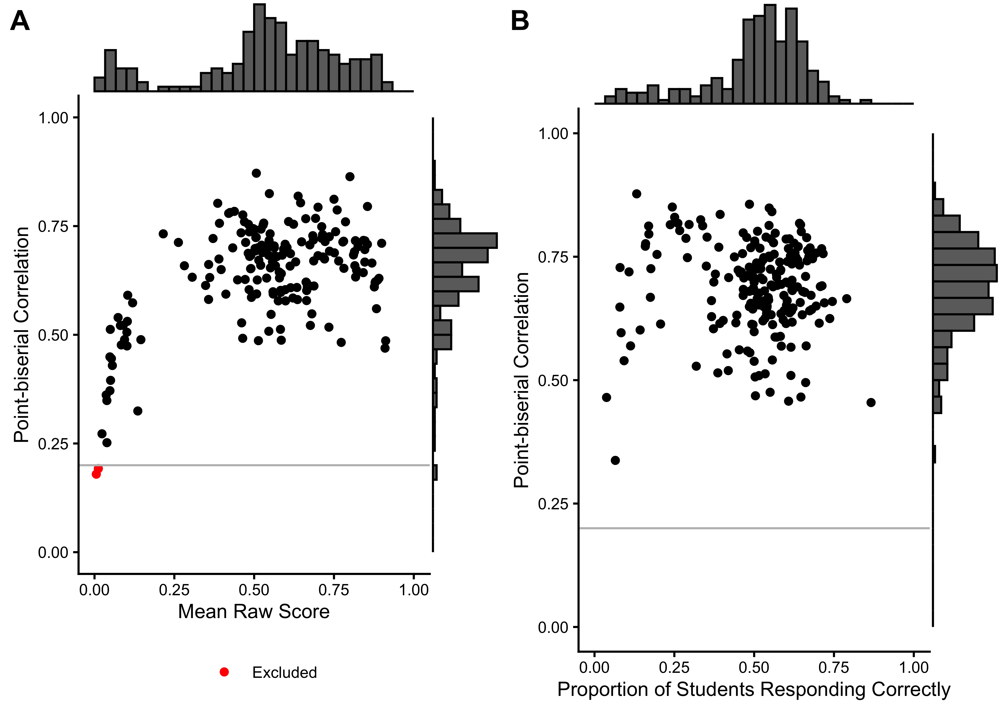
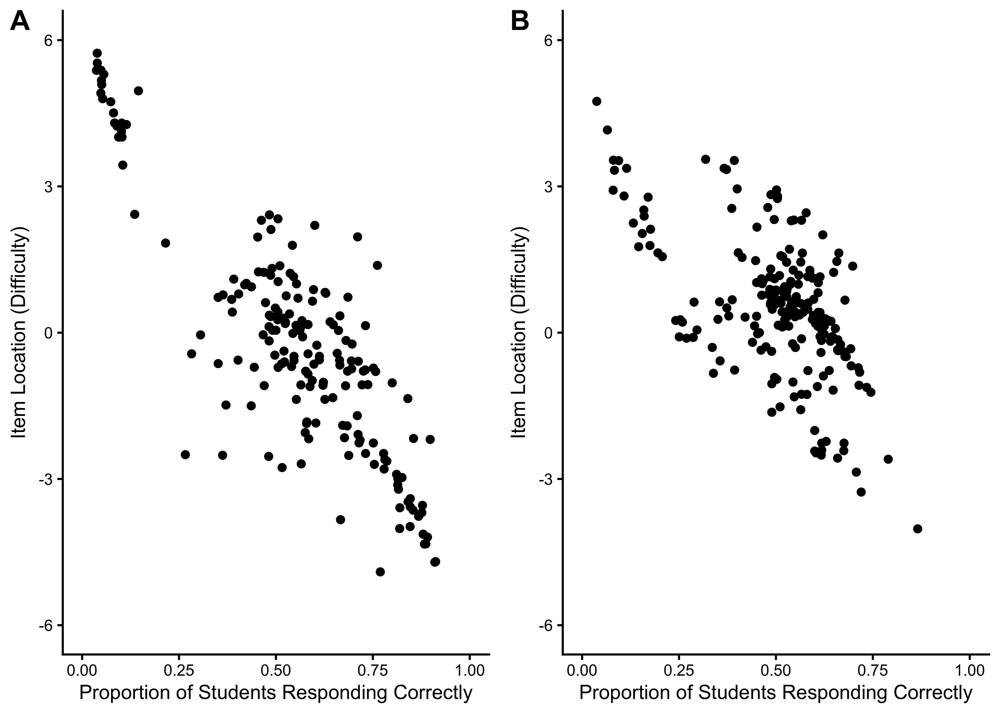
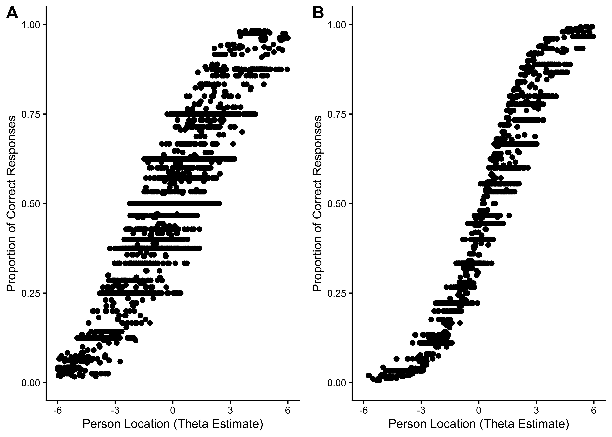
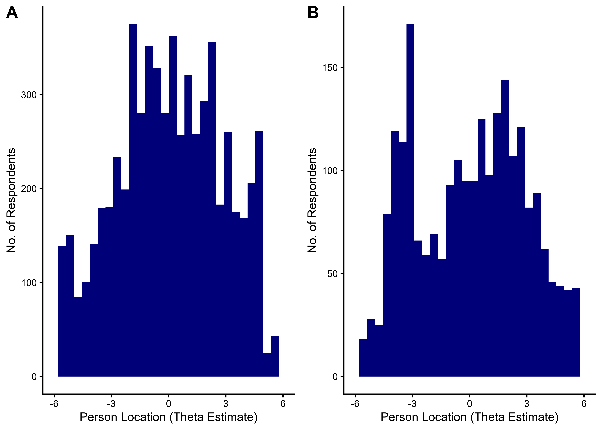
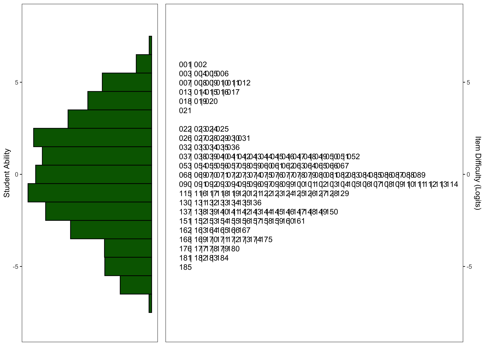
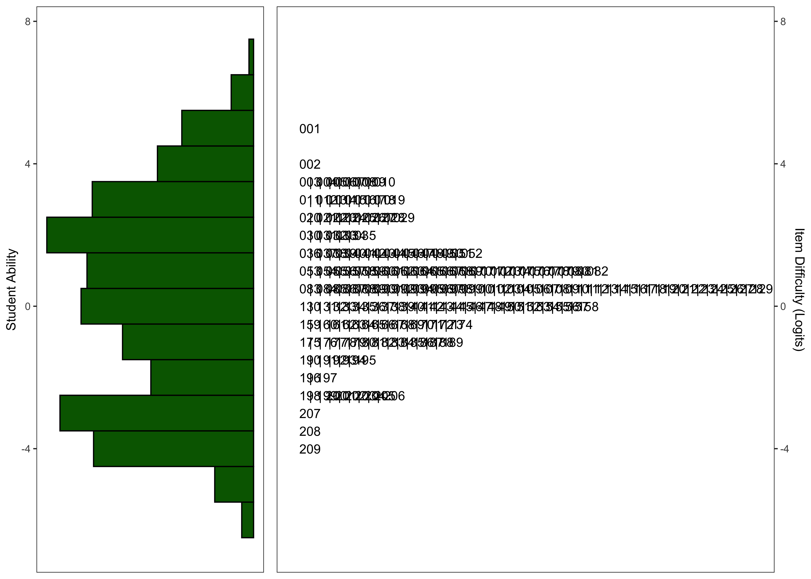

| Characteristic |
English
|
Spanish
|
||
|---|---|---|---|---|
| G1 N = 3,249 |
G2 N = 3,251 |
G1 N = 1,354 |
G2 N = 1,060 |
|
| Timepoint | ||||
| Fall 2023 | 605 (19%) | 648 (20%) | 0 (0%) | 0 (0%) |
| Winter 2024 | 0 (0%) | 0 (0%) | 0 (0%) | 432 (52%) |
| Fall 2024 | 2,644 (81%) | 2,603 (80%) | 627 (100%) | 396 (48%) |
| Administration Format | ||||
| CAT | 2,644 (81%) | 2,603 (80%) | 827 (61%) | 628 (59%) |
| Forms | 605 (19%) | 648 (20%) | 527 (39%) | 432 (41%) |
| Race | ||||
| American/Alaskan Native | 117 (3.8%) | 63 (2.1%) | 40 (4.9%) | 15 (1.4%) |
| Asian | 247 (8.1%) | 231 (7.6%) | 32 (3.9%) | 25 (2.4%) |
| Black/African American | 307 (10%) | 343 (11%) | 19 (2.3%) | 14 (1.3%) |
| Not reported | 393 (13%) | 366 (12%) | 231 (28%) | 443 (42%) |
| Other | 441 (14%) | 376 (12%) | 115 (14%) | 68 (6.5%) |
| White | 1,543 (51%) | 1,653 (55%) | 379 (46%) | 479 (46%) |
| Unknown | 201 | 219 | 538 | 16 |
| Ethnicity | ||||
| Hispanic/Latin(o/a) | 2,134 (70%) | 2,105 (70%) | 764 (96%) | 951 (92%) |
| Intentional nonreport | 13 (0.4%) | 5 (0.2%) | 2 (0.3%) | 4 (0.4%) |
| Not Hispanic/Latin(o/a) | 898 (29%) | 892 (30%) | 34 (4.3%) | 75 (7.3%) |
| Unknown | 204 | 249 | 554 | 30 |
| Gender | ||||
| Female | 1,512 (50%) | 1,479 (49%) | 428 (55%) | 549 (53%) |
| Male | 1,507 (50%) | 1,509 (51%) | 345 (45%) | 489 (47%) |
| Non-binary | 0 (0%) | 0 (0%) | 0 (0%) | 1 (<0.1%) |
| Unknown | 230 | 263 | 581 | 21 |
| Home Language | ||||
| English | 1,825 (64%) | 1,821 (64%) | 101 (12%) | 148 (15%) |
| Spanish | 901 (32%) | 884 (31%) | 709 (87%) | 855 (85%) |
| Other | 107 (3.8%) | 144 (5.1%) | 2 (0.2%) | 7 (0.7%) |
| Unknown | 416 | 402 | 542 | 50 |
| English Proficiency Label | ||||
| (Re-)Classified Proficient | 159 (5.8%) | 294 (10%) | 84 (11%) | 129 (13%) |
| English Learner | 835 (30%) | 728 (26%) | 599 (78%) | 708 (73%) |
| English-only | 1,763 (64%) | 1,800 (64%) | 88 (11%) | 138 (14%) |
| Unknown | 492 | 429 | 583 | 85 |
| Ever IEP/504 | 229 (9.5%) | 241 (10%) | 63 (8.9%) | 81 (10%) |
| Unknown | 829 | 918 | 649 | 255 |
| Unknown | 727 | 232 | ||
24 Word Reading
24.1 Task Description
Children are shown words and are asked to read them.
24.2 Construct
The Word Reading task measures the construct of decoding accuracy, the ability to translate print into speech by correctly pairing graphemes (letters) with their corresponding phonemes (sounds) using pronounceable real words.
24.3 Item Development
24.3.1 English
For the development of the item pool, multiple curricula to create a list of frequent, decodable words, including curricula used in the United States, like McGraw-Hill’s “Wonders”, Benchmark’s “Benchmark Advance”, and HMH’s “Journey” were reviewed.
From this pool of items, we selected a sample of words, whose semantic meaning was overall easily accessed by the target population, with a variety of word types (e.g., nouns, verbs, adjectives, adverbs, etc.) and with varying orthographic and phonological length.
24.3.2 Spanish
For the development of the item pool, the research team reviewed multiple curricula to build up a list of frequent, decodable words, including curricula used in dual language programs in the United States, like the McGraw-Hill Maravillas, Estrellita, Houghton Mifflin Lectura, in addition to existing kindergarten and first-grade materials from Mexico, Panama, and Chile.
From the pool of items, we selected a sample of words, whose semantic meaning was overall easily accessed by the target population, with a variety of word types (e.g., nouns, verbs, adjectives, adverbs, etc.) and with varying orthographic and phonological length. Concepts represented by multiple words –that is, reflecting dialectic variability based on the cultural and/or geographic background of the respondent–were excluded to avoid benefiting certain cultural groups (e.g., “pig”: puerco, cerdo, chancho; “shirt”: polera, polo, remera; “avocado”: aguacate, palta). In addition to the selected pool of words, we included cognates to explore the possible interference or advancement of cognates in word reading for students in dual language programs.
24.3.3 Scoring
Dichotomous fixed response format of 0 points for incorrect responses or non-responses and 1 point for correct ones.
24.4 Calibration Samples
24.5 Psychometric Analysis
24.5.1 Basic Item Statistics
We excluded 0 items from the English task and 0 items from the Spanish task based on low response counts (n < 90). 0 items were excluded because they had no variance in the Spanish task, and 0 items in the English task. Additionally, we excluded 2 items from the English task and 0 items from the Spanish task based on low point-biserial correlations (r < 0.2). Table 24.2 summarizes the basic item characteristics, Figure 24.1 shows the relationship between point-biserial correlations and the proportion of correct responses for each item.
English
|
Spanish
|
|||
|---|---|---|---|---|
| Characteristic |
Before Excl.
|
After Excl.
|
Before Excl.
|
After Excl.
|
| N = 187 | N = 185 | N = 209 | N = 209 | |
| No. of Responses | 363 (325) | 365 (326) | 214 (146) | 214 (146) |
| Proportion Correct | 0.54 (0.23) | 0.55 (0.22) | 0.51 (0.16) | 0.51 (0.16) |
| Point-biserial Correlation | 0.64 (0.12) | 0.65 (0.11) | 0.69 (0.09) | 0.69 (0.09) |
| Excluded (n < 90) | 0 (0%) | 0 (0%) | 0 (0%) | 0 (0%) |
| Excluded (pbis < .2) | 2 (1.1%) | 0 (0%) | 0 (0%) | 0 (0%) |
| Excluded (no variation) | 0 (0%) | 0 (0%) | 0 (0%) | 0 (0%) |

24.5.2 Rasch Analysis
24.5.2.1 Item Location Estimates

24.5.2.2 Item Fit Statistics
| A | B | C | D | Total | A | B | C | D | Total | |
|---|---|---|---|---|---|---|---|---|---|---|
| Outfit MSE | ||||||||||
| A | 144 | 0 | 0 | 0 | 144 | 171 | 0 | 0 | 0 | 171 |
| B | 28 | 0 | 0 | 0 | 28 | 26 | 0 | 0 | 0 | 26 |
| C | 8 | 0 | 0 | 0 | 8 | 7 | 0 | 0 | 0 | 7 |
| D | 3 | 0 | 2 | 0 | 5 | 4 | 0 | 1 | 0 | 5 |
| Total | 183 | 0 | 2 | 0 | 185 | 208 | 0 | 1 | 0 | 209 |
24.5.2.3 Person Location Estimates

24.5.2.4 Person Fit Statistics
| A | B | C | D | Total | A | B | C | D | Total | |
|---|---|---|---|---|---|---|---|---|---|---|
| Outfit MSE | ||||||||||
| A | 2,718 | 0 | 36 | 2 | 2,756 | 1,363 | 0 | 2 | 2 | 1,367 |
| B | 1,581 | 1,794 | 3 | 0 | 3,378 | 172 | 745 | 0 | 0 | 917 |
| C | 90 | 0 | 30 | 7 | 127 | 26 | 0 | 3 | 0 | 29 |
| D | 80 | 0 | 44 | 18 | 142 | 15 | 0 | 11 | 0 | 26 |
| Total | 4,469 | 1,794 | 113 | 27 | 6,403 | 1,576 | 745 | 16 | 2 | 2,339 |
24.5.2.5 Distribution of Theta Estimates

24.5.2.6 Wright Maps


24.5.2.7 Model Summary
| Characteristic | N = 185 | N = 6,403 | N = 209 | N = 2,339 |
|---|---|---|---|---|
| Logit Scale Location | -0.19 (2.41) | 0.05 (-2.02, 2.22) | 0.53 (1.46) | 0.33 (-2.68, 2.36) |
| Outfit | 0.87 (0.73) | 0.48 (0.28, 0.70) | 0.89 (0.48) | 0.65 (0.05, 0.90) |
| Infit | 0.92 (0.15) | 0.70 (0.43, 0.90) | 0.96 (0.16) | 0.80 (0.19, 0.94) |
| Reliability of Separation | 0.8997 | 0.8540 | 0.9130 | 0.8429 |
24.5.2.7.1 Final Number of Items
Following the exclusion of items with point-biserial correlations < .20 and items with poor fit statistics, the final versions of the task contain 185 and 209 for the English and Spanish task, respectively.
24.6 Criterion Validity Evidence
24.6.1 Sample
| Characteristic |
English
|
Spanish
|
||
|---|---|---|---|---|
| G1 N = 221 |
G2 N = 259 |
G1 N = 191 |
G2 N = 227 |
|
| Timepoint | ||||
| Spring 2024 | 221 (100%) | 259 (100%) | 191 (100%) | 227 (100%) |
| Race | ||||
| American/Alaskan Native | 5 (2.3%) | 1 (0.4%) | 4 (2.1%) | 4 (1.8%) |
| Asian | 25 (11%) | 34 (13%) | 6 (3.2%) | 3 (1.3%) |
| Black/African American | 27 (12%) | 32 (12%) | 4 (2.1%) | 4 (1.8%) |
| Not reported | 55 (25%) | 68 (26%) | 73 (39%) | 96 (43%) |
| Other | 34 (15%) | 26 (10%) | 10 (5.3%) | 14 (6.2%) |
| White | 75 (34%) | 98 (38%) | 92 (49%) | 104 (46%) |
| Ethnicity | ||||
| Hispanic/Latin(o/a) | 102 (46%) | 140 (54%) | 172 (90%) | 198 (87%) |
| Intentional nonreport | 2 (0.9%) | 0 (0%) | 0 (0%) | 2 (0.9%) |
| Not Hispanic/Latin(o/a) | 117 (53%) | 119 (46%) | 19 (9.9%) | 27 (12%) |
| Gender | ||||
| Female | 97 (44%) | 127 (49%) | 100 (52%) | 128 (56%) |
| Male | 124 (56%) | 132 (51%) | 91 (48%) | 99 (44%) |
| Home Language | ||||
| English | 159 (73%) | 177 (69%) | 43 (23%) | 57 (26%) |
| Spanish | 37 (17%) | 41 (16%) | 144 (76%) | 164 (74%) |
| Other | 23 (11%) | 40 (16%) | 2 (1.1%) | 1 (0.5%) |
| Unknown | 2 | 1 | 2 | 5 |
| English Proficiency Label | ||||
| (Re-)Classified Proficient | 21 (9.7%) | 23 (9.0%) | 33 (17%) | 37 (17%) |
| English Learner | 47 (22%) | 60 (23%) | 120 (63%) | 129 (59%) |
| English-only | 148 (69%) | 173 (68%) | 36 (19%) | 54 (25%) |
| Unknown | 5 | 3 | 2 | 7 |
| Ever IEP/504 | 22 (11%) | 29 (14%) | 16 (10%) | 17 (9.3%) |
| Unknown | 23 | 47 | 34 | 45 |
| Unknown | 2 | 2 | ||
English Word Reading was correlated with the Letter-Word Identification subtest from the Woodcock-Johnson IV (WJ IV ACH) test (Schrank, McGrew, and Mather 2014). Spanish Word Reading was correlated with the Identificación de Letras y Palabras subtest from the Batería IV Woodcock-Muñoz (Batería IV APROV) test (Woodcock et al. 2019).
| Grade | n | r [CI] | n | r [CI] | n | r [CI] |
|---|---|---|---|---|---|---|
| G1 | 220 | 0.90 [0.87, 0.92] | 47 | 0.90 [0.83, 0.94] | 191 | 0.85 [0.80, 0.88] |
| G2 | 259 | 0.77 [0.72, 0.82] | 60 | 0.80 [0.69, 0.88] | 227 | 0.80 [0.75, 0.84] |